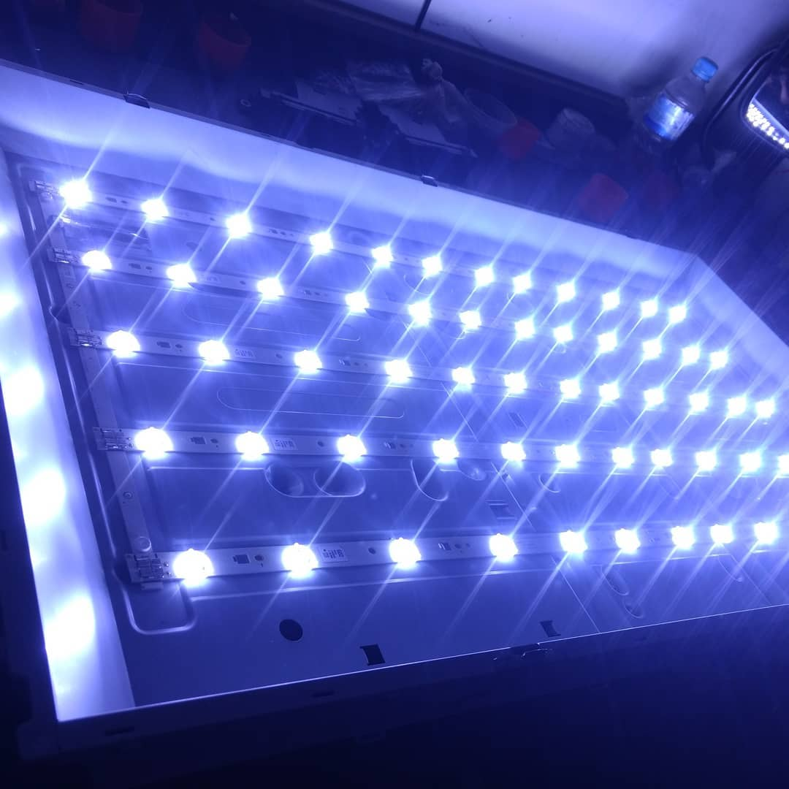

Nuestras publicaciones
\

En esta oportunidad mostramos la reparación de este tv LRT 42' el cual se reparó el circuito backlight
Reparación de circuito backlight de tv Samsung 40' En este, como en todos los casos, después de la reparación se controla y varía el circuito controlador del back para evitar que el tv vuelva a sufrir problemas en esta etapa, garantizándole al cliente la reparación y mejorando el diseño original.

Trabajo minucioso de soldadura sobre un Flex de pantalla para recuperar este panel de 50' de un tv TCL el cual había sido dañado en otro service por mala manipulación de la pantalla.